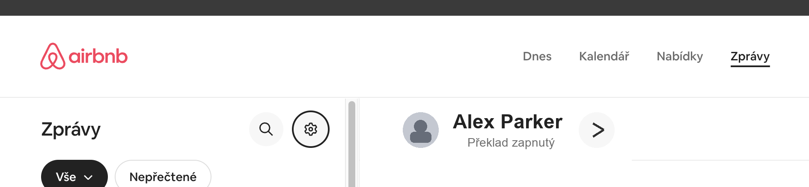
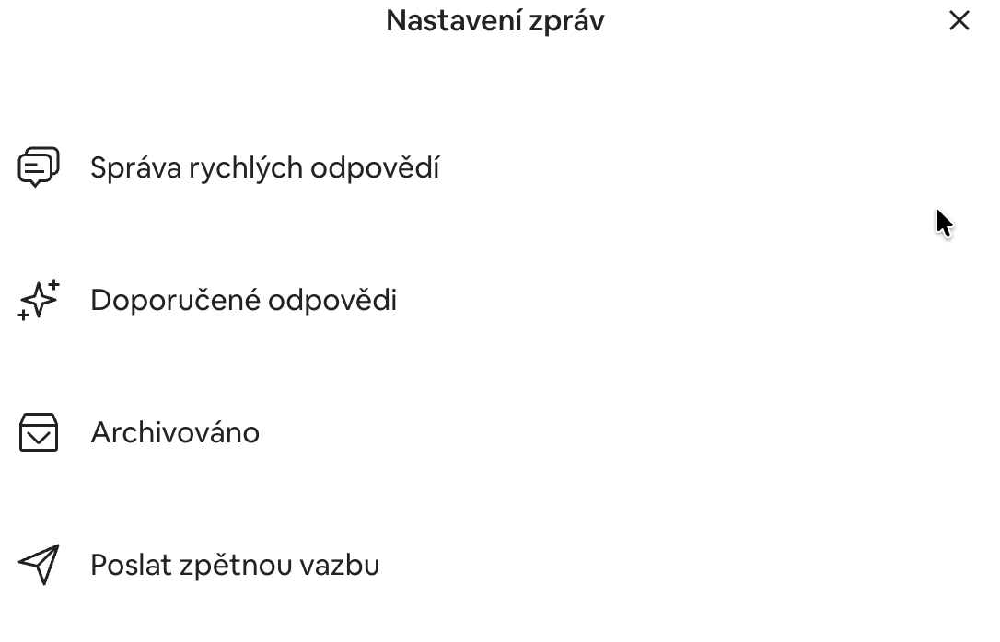
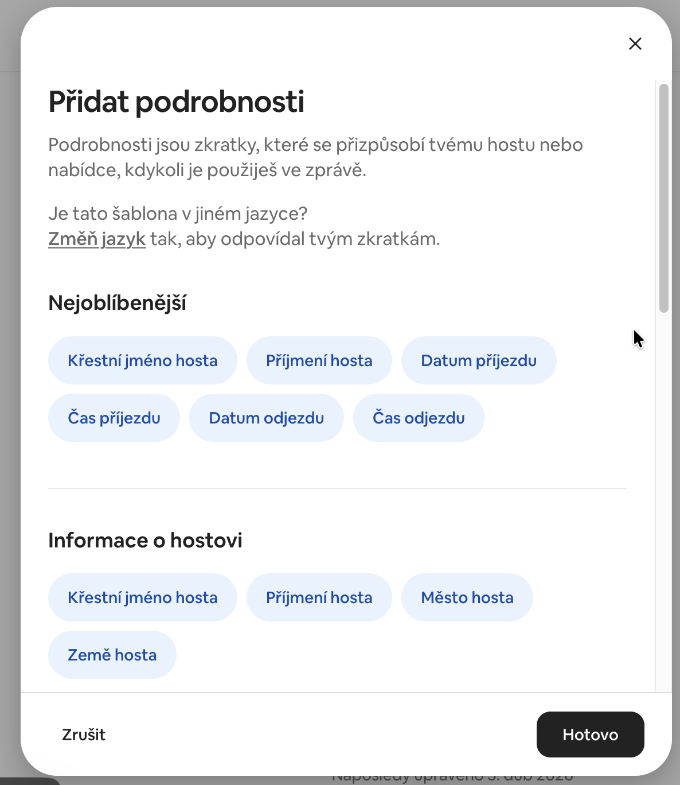
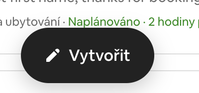

Cần chuẩn bị gì trước
Bất động sản ở Superhostem
Bạn chỉ thiết lập tự động hóa khi bạn đã thiết lập một thuộc tính cụ thể trong hệ thống.
Liên kết khách
Bạn cần một liên kết cố định hoặc liên kết công khai để gửi cho khách trong tin nhắn.
Nền tảng đã chọn
Quyết định xem nên thiết lập tin nhắn tự động trên Airbnb hay Booking.com.
Bắt đầu từ đâu trong Superhost
Trong chi tiết của một thuộc tính cụ thể, hãy mở phần Tự động hóa. Đó là nơi bạn sẽ tìm thấy liên kết của khách và đặt số lượng đặt phòng trước bao nhiêu ngày sẽ có sẵn cho khách thông qua liên kết này.
- sao chép liên kết của khách
- đặt số ngày trước khi đặt chỗ sẽ được hiển thị
- lưu cài đặt trước khi tạo tin nhắn tự động trên nền tảng OTA
Nó trông như thế nào trong tin tức Airbnb




Cài đặt trong Airbnb
Mở quản lý trả lời nhanh
Trong Airbnb vào phần tin nhắn với khách, mở gear và vào phần Quản lý phản hồi nhanh.
Tạo một mẫu mới
Tạo tin nhắn trả lời nhanh hoặc tin nhắn tự động mới. Nên có một mẫu riêng cho mỗi ưu đãi.
Dán văn bản và liên kết từ Superhost
Dán mẫu giao tiếp của bạn vào văn bản tin nhắn và thêm liên kết khách đã sao chép từ phần Tự động hóa trong Siêu máy chủ.
Chỉ chọn một đề nghị đúng
Trong cài đặt mẫu, hãy kiểm tra xem nó chỉ được gán cho một menu cụ thể hay không. Nếu bạn quản lý nhiều ưu đãi thì mỗi ưu đãi phải có mẫu riêng.
Đặt thời gian gửi chính xác
Ví dụ: cài đặt được đề xuất là 3 ngày trước khi đến. Điều quan trọng là số ngày tương tự cũng được đặt trong cài đặt liên kết trong Superhost.
Kiểm tra mẫu cuối cùng
Trước khi lưu, hãy kiểm tra ba điều: liên kết chính xác, ưu đãi được chọn chính xác và thời gian gửi chính xác.
Cài đặt trong Booking.com
Mở cài đặt tin nhắn
Trên trang chủ của extranet Booking.com, mở ưu đãi Cơ sở lưu trú và sau đó Cài đặt tin nhắn.
Tạo một mẫu mới
Một phần Mẫu báo cáo chọn tạo mẫu mới.
Dán liên kết từ Superhost
Dán liên kết khách đã sao chép vào văn bản của mẫu mới. Nếu bạn có một chỗ nghỉ có nhiều căn trên Booking.com, vui lòng kiểm tra xem bạn có đang sử dụng đúng liên kết cho đơn vị cụ thể hay không.
Đặt tên cho mẫu và chọn chủ đề
Đặt cho mẫu một cái tên dễ hiểu và thường chọn thông tin liên lạc khi đến hoặc trước khi đến làm loại tin nhắn.
Lên lịch gửi hàng
Đối với mẫu mới tạo, chọn Lên lịch gửi mẫu và đặt số ngày trước khi đến.
Khớp thời gian với cài đặt trong Superhost
Đặt cùng số ngày trước khi đến phần Tự động hóa trong Siêu máy chủ. Nếu không, khách có thể không thấy đặt phòng chính xác sau khi mở liên kết.
Làm thế nào để bạn biết tự động hóa được thiết lập chính xác?
- trong nội dung tin nhắn có một liên kết chính xác cho một thuộc tính cụ thể
- mẫu được liên kết với đúng menu hoặc đơn vị
- thời gian gửi trong OTA tương ứng với số ngày đặt trong Superhost
- khách có thể xem đặt chỗ của mình sau khi nhấp vào liên kết
Quy trình làm việc cơ bản được đề xuất
Tin nhắn sau khi đặt phòng
Một xác nhận đặt phòng ngắn gọn sẽ giúp khách hàng tin tưởng rằng mọi thứ đều ổn. Nhưng bạn không cần phải gửi tất cả các dịch vụ quản lý cùng một lúc ở giai đoạn này.
Tin nhắn trước khi đến có biểu mẫu
Đây là tính năng tự động hóa chính mà bài viết này đề cập đến. Đây là nơi bạn gửi liên kết đến biểu mẫu hoặc sổ lưu bút và thu thập dữ liệu cần thiết cho hoạt động và pháp lý.
Hướng dẫn lưu trú
Tùy thuộc vào loại hoạt động, bạn có thể theo dõi bằng một tin nhắn riêng với thông tin về việc nhận phòng, vào tòa nhà hoặc thông tin thiết thực về thời gian lưu trú của bạn.
Lời nhắn sau khi khởi hành
Khi kết thúc thời gian lưu trú, bạn có thể kết thúc quá trình tự động hóa bằng lời cảm ơn, lời kêu gọi đánh giá hoặc danh sách kiểm tra nội bộ để dọn dẹp và các nhiệm vụ tiếp theo khác.
Cách bắt đầu đơn giản
Không cần phải tự động hóa mọi thứ ngay từ đầu. Đầu tiên, điều hợp lý nhất là thiết lập và chạy một thông báo hoạt động tốt trước khi đến, sẽ gửi cho khách liên kết phù hợp vào đúng thời điểm. Chỉ khi đó việc mở rộng quy trình làm việc hơn nữa mới có ý nghĩa.
- Cách lưu trữ hồ sơ khách và lưu trú tại Superhostem
- Cách xử lý phí hàng tháng cho đô thị trong Superhost
Những sai lầm phổ biến nhất
- liên kết sai hoặc liên kết cố định cũ được nhúng trong tin nhắn
- một mẫu bị gán nhầm cho nhiều ưu đãi
- số ngày trong OTA không khớp với cài đặt trong Superhost
- tại Booking.com, một liên kết được sử dụng cho một đơn vị khác với một đặt phòng cụ thể
Xác minh và nguồn
Chúng tôi đã chuẩn bị bài viết này như một hướng dẫn thực tế dựa trên logic thiết lập cơ sở lưu trú trong Superhost.
Bạn có muốn đặt chỗ trên điện thoại của bạn?
Nếu tự động hóa được kết nối với đặt chỗ, việc có cùng một tính năng tự động hóa có thể hữu ích tổng quan cũng có trong lịch di động.